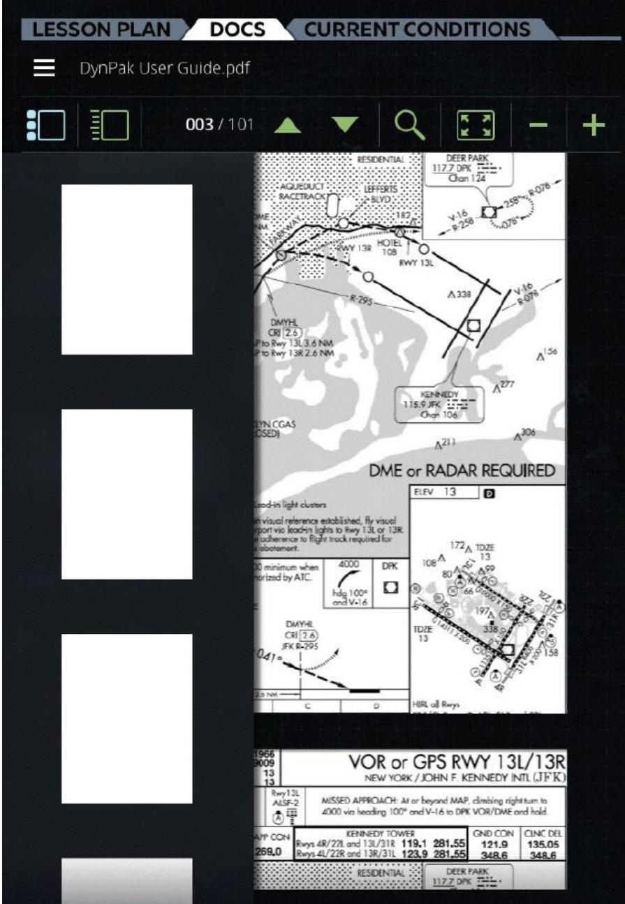
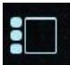
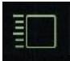
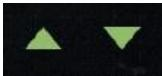
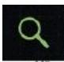
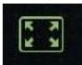
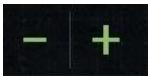

1.2.2 文档选项卡 Doc Tab
原始手册对应：## 6. DOCS Tab | 整理时间：2026-05-30 | 细化粒度：三级菜单 + 状态流转 + 数据流推导
一、功能层级与界面总览

图 1：文档选项卡（DOC Tab）整体界面 — 来自 A320 原始文档
核心定位：文档选项卡是教员查看、浏览和检索参考文档的核心入口。支持缩略图、列表、搜索、缩放等多种浏览方式。
1.1 功能层级结构
graph TD
A["DOCS Tab
文档选项卡"] subgraph LeftPanel["左侧区域 / Left Panel — 页面浏览"] B["缩略图/列表区
Thumbnail/List Panel"] B1["缩略图视图
Thumbnail View"] B2["列表视图
List View"] end subgraph MainContent["主内容区 / Main Content — 文档显示"] C["文档主内容区
Document Viewport"] end subgraph Toolbar["顶部工具栏 / Toolbar — 控制按钮"] D["顶部工具栏
Toolbar"] D1["视图切换
View Toggle"] D2["上下滚动
Scroll Up/Down"] D3["搜索
Search"] D4["视图扩展
View Expansion"] D5["缩放
Zoom"] end A --> B A --> C A --> D B --> B1 B --> B2 D --> D1 D --> D2 D --> D3 D --> D4 D --> D5 B1 -.->|点击切换| C B2 -.->|点击切换| C D1 -.->|切换视图| B1 D1 -.->|切换视图| B2 D2 -.->|翻页浏览| C D3 -.->|高亮匹配| C D4 -.->|扩展可视区| C D5 -.->|放大/缩小| C style A fill:#2563eb,stroke:#1e40af,stroke-width:3px,color:#fff style LeftPanel fill:#dbeafe,stroke:#2563eb,stroke-width:2px style MainContent fill:#f0fdf4,stroke:#059669,stroke-width:2px style Toolbar fill:#fef3c7,stroke:#d97706,stroke-width:2px style B fill:#dbeafe,stroke:#2563eb,stroke-width:2px style C fill:#f0fdf4,stroke:#059669,stroke-width:2px style D fill:#fef3c7,stroke:#d97706,stroke-width:2px
文档选项卡"] subgraph LeftPanel["左侧区域 / Left Panel — 页面浏览"] B["缩略图/列表区
Thumbnail/List Panel"] B1["缩略图视图
Thumbnail View"] B2["列表视图
List View"] end subgraph MainContent["主内容区 / Main Content — 文档显示"] C["文档主内容区
Document Viewport"] end subgraph Toolbar["顶部工具栏 / Toolbar — 控制按钮"] D["顶部工具栏
Toolbar"] D1["视图切换
View Toggle"] D2["上下滚动
Scroll Up/Down"] D3["搜索
Search"] D4["视图扩展
View Expansion"] D5["缩放
Zoom"] end A --> B A --> C A --> D B --> B1 B --> B2 D --> D1 D --> D2 D --> D3 D --> D4 D --> D5 B1 -.->|点击切换| C B2 -.->|点击切换| C D1 -.->|切换视图| B1 D1 -.->|切换视图| B2 D2 -.->|翻页浏览| C D3 -.->|高亮匹配| C D4 -.->|扩展可视区| C D5 -.->|放大/缩小| C style A fill:#2563eb,stroke:#1e40af,stroke-width:3px,color:#fff style LeftPanel fill:#dbeafe,stroke:#2563eb,stroke-width:2px style MainContent fill:#f0fdf4,stroke:#059669,stroke-width:2px style Toolbar fill:#fef3c7,stroke:#d97706,stroke-width:2px style B fill:#dbeafe,stroke:#2563eb,stroke-width:2px style C fill:#f0fdf4,stroke:#059669,stroke-width:2px style D fill:#fef3c7,stroke:#d97706,stroke-width:2px
1.2 界面结构
下方表格中的位置描述基于图 1（DOCS Tab 整体界面）实际截图分析得出。
| 区域/控件 | 位置 | 功能说明 | 对应章节 |
|---|---|---|---|
| 顶部工具栏 Toolbar | 顶部（单行） | 集中放置所有控制按钮：视图切换、上下滚动、页码、搜索、视图扩展、缩放 | 详见当前页面 2.1~2.6 小节 |
| 文档主内容区 Document Viewport | 右侧主区域 | 显示当前选中页面的文档内容，支持缩放和滚动 | 详见当前页面 2.1/2.2 小节（视图内容） |
| 缩略图/列表区 Thumbnail / List Panel | 左侧边栏 | 以缩略图或列表形式展示文档所有页面，点击切换页面；缩略图与列表两种视图互斥，只能激活其一 | 详见当前页面 2.1 小节（缩略图）、2.2 小节（列表） |
| 上下滚动 Scroll Up and Down | 顶部工具栏（中部） | 向上 ▲ / 向下 ▼ 按钮，中间显示当前页码 / 总页数 | 详见当前页面 2.3 小节 |
| 搜索 Search | 顶部工具栏（中右部） | 放大镜图标，点击后输入关键词搜索文档内容 | 详见当前页面 2.4 小节 |
| 视图扩展 View Expansion | 顶部工具栏（右部） | 扩展图标，点击后放大文档可视区域 | 详见当前页面 2.5 小节 |
| 缩放 Zoom | 顶部工具栏（最右侧） | 缩小(−) / 放大(+) 按钮 | 详见当前页面 2.6 小节 |
二、核心功能详解
2.1 缩略图视图（Thumbnail View）
| 属性 | 说明 |
|---|---|
| 功能定义 | 以小型图形缩略图的形式展示每个文档页面的预览 |
| 呈现方式 | 网格/横向排列的小型页面预览图 |
| 交互 | 点击缩略图 → 主浏览区切换到对应页面 |
| 适用场景 | 快速定位已知的图表、航图或插图页面 |
| 与列表视图关系 | 与列表视图互斥，两者只能激活其一；切换后当前选中页面位置保持 |

图 2：缩略图视图 — 提供每个较大页面的小型图形表示列表
2.1.1 缩略图视图操作流程
flowchart LR
Start([缩略图视图]) --> Browse[浏览页面缩略图]
Browse --> Click[点击目标缩略图]
Click --> Switch[主内容区切换至对应页面]
Switch --> End([完成])
style Start fill:#dbeafe,stroke:#2563eb
style End fill:#d1fae5,stroke:#059669
2.2 列表视图（List View）
| 属性 | 说明 |
|---|---|
| 功能定义 | 以纯文本列表形式展示所有文档页面的标题 |
| 呈现方式 | 纵向列表，每行显示一个页面标题 |
| 交互 | 点击列表项 → 主浏览区切换到对应页面 |
| 适用场景 | 已知页面标题时快速跳转；文本密集型文档浏览 |
| 与缩略图视图关系 | 与缩略图视图互斥，两者只能激活其一；切换后当前选中页面位置保持 |

图 3：列表视图 — 提供所有页面标题的列表
2.2.1 列表视图操作流程
flowchart LR
Start([列表视图]) --> Browse[浏览页面标题列表]
Browse --> Click[点击目标列表项]
Click --> Switch[主内容区切换至对应页面]
Switch --> End([完成])
style Start fill:#dbeafe,stroke:#2563eb
style End fill:#d1fae5,stroke:#059669
2.3 上下滚动（Scroll Up and Down）
| 属性 | 说明 |
|---|---|
| 功能定义 | 以"上一页 / 下一页"的离散方式逐页浏览文档 |
| 交互方式 | 点击「上一页」/「下一页」按钮，或手势滑动 |
| 边界行为 | 到达第一页时「上一页」禁用；到达最后一页时「下一页」禁用 |
| 状态反馈 | 当前页码 / 总页数 在底部或顶部显示 |

图 4：上下滚动 — 以"下一页"、"上一页"的方式在文档中上下滚动
2.3.1 上下滚动操作流程
flowchart LR
Start([页面浏览中]) --> Click[点击上一页或下一页]
Click --> Check{边界检查}
Check -->|第一页| DPrev[上一页按钮禁用]
Check -->|中间页| Continue[正常切换页面]
Check -->|最后一页| DNext[下一页按钮禁用]
DPrev --> End([完成])
Continue --> End
DNext --> End
style Start fill:#dbeafe,stroke:#2563eb
style End fill:#d1fae5,stroke:#059669
2.4 搜索功能（Search Function）
| 属性 | 说明 |
|---|---|
| 功能定义 | 在文档内容中搜索特定单词或字符串 |
| 输入方式 | 文本输入框 + 搜索按钮 / 回车触发 |
| 搜索结果 | 高亮匹配文本；提供匹配结果列表供快速跳转 |
| 边界条件 | 无匹配时应提示"未找到结果"；支持空字符串校验 |

图 5：搜索功能 — 允许教员搜索一个单词或一串字符
2.4.1 搜索功能操作流程
flowchart LR
Start([点击搜索按钮]) --> Input[输入关键词]
Input --> Execute[执行搜索]
Execute --> Result{匹配结果?}
Result -->|有匹配| Highlight[高亮文本并展示结果列表]
Highlight --> Click[点击结果跳转对应页面]
Click --> End([完成])
Result -->|无匹配| NoResult[提示未找到结果]
NoResult --> Input
style Start fill:#dbeafe,stroke:#2563eb
style End fill:#d1fae5,stroke:#059669
2.5 视图扩展（View Expansion）
| 属性 | 说明 |
|---|---|
| 功能定义 | 将当前文档视图扩展为更大的可视区域 |
| 交互方式 | 点击「扩展视图」按钮 |
| 退出方式 | 再次点击按钮、按 ESC 键、或点击关闭区域 |
| 联动 | 扩展视图下仍支持缩放和滚动操作 |

图 6：视图扩展 — 扩展可查看文档的视图
2.5.1 视图扩展操作流程
flowchart LR
Start([页面浏览]) --> Click[点击扩展视图按钮]
Click --> Expand[进入扩展视图模式]
Expand --> Operate[继续缩放或滚动浏览]
Operate --> Exit{退出扩展?}
Exit -->|再次点击按钮| Collapse[退出扩展视图]
Exit -->|按ESC键| Collapse
Exit -->|点击关闭区域| Collapse
Collapse --> End([完成])
style Start fill:#dbeafe,stroke:#2563eb
style End fill:#d1fae5,stroke:#059669
2.6 缩放（Zoom）
| 属性 | 说明 |
|---|---|
| 功能定义 | 放大或缩小文档的显示比例 |
| 控制方式 | 「+」放大 / 「−」缩小按钮；或捏合手势 |
| 缩放范围 | 存在最小和最大缩放比例限制，具体阈值由文档渲染引擎定义 |
| 状态保持 | 切换页面时的缩放比例保持行为取决于产品实现 |

图 7：缩放 — 放大和缩小控制
2.6.1 缩放操作流程
flowchart LR
Start([页面浏览]) --> Need{需要缩放?}
Need -->|放大| Plus[点击放大按钮]
Need -->|缩小| Minus[点击缩小按钮]
Plus --> Check{达到边界?}
Minus --> Check
Check -->|是| Disable[对应按钮禁用]
Check -->|否| Apply[应用新缩放比例]
Disable --> End([完成])
Apply --> End
style Start fill:#dbeafe,stroke:#2563eb
style End fill:#d1fae5,stroke:#059669
2.7 视图状态流转
stateDiagram-v2
[*] --> 缩略图视图 : 加载默认视图
[*] --> 列表视图 : 记忆上次视图
缩略图视图 --> 列表视图 : 点击[列表]
列表视图 --> 缩略图视图 : 点击[缩略图]
缩略图视图 --> 页面浏览 : 点击页面
列表视图 --> 页面浏览 : 点击列表项
页面浏览 --> 扩展视图 : 点击[扩展视图]
扩展视图 --> 页面浏览 : 退出扩展
页面浏览 --> 搜索中 : 输入关键词
搜索中 --> 结果展示 : 有匹配
搜索中 --> 无结果 : 无匹配
无结果 --> 搜索中 : 修改关键词
结果展示 --> 页面浏览 : 点击结果
页面浏览 --> 缩放调整 : 点击加减按钮
缩放调整 --> 页面浏览 : 完成缩放
三、全局操作流程与推导
3.1 DOC Tab 教员核心浏览流程全景图
下图汇总了 Chapter 1 全部子章节（2.1~2.6）的核心操作流程，形成从主界面入口到最终浏览生效的完整闭环。教员可从任意入口触发对应功能；每个功能内部的关键操作步骤均在对应纵向 subgraph 中展开。如需查看各功能更详细的字段属性与边界行为，请参见对应子章节的横向流程图（2.1.1、2.2.1、2.3.1、2.4.1、2.5.1、2.6.1）。
flowchart LR
Start([打开 DOCS Tab])
Start --> VIEW_MODE{选择浏览方式}
VIEW_MODE -->|缩略图| THUMB_ENTRY[点击缩略图按钮]
VIEW_MODE -->|列表| LIST_ENTRY[点击列表按钮]
VIEW_MODE -->|翻页| SCROLL_ENTRY[点击上一页/下一页]
VIEW_MODE -->|搜索| SEARCH_ENTRY[点击搜索按钮]
VIEW_MODE -->|扩展| EXPAND_ENTRY[点击扩展视图按钮]
VIEW_MODE -->|缩放| ZOOM_ENTRY[点击放大/缩小按钮]
subgraph THUMB_FLOW [缩略图视图流程 — 2.1]
direction TB
T1[浏览页面缩略图] --> T2[点击目标缩略图] --> T3[主内容区切换页面]
end
subgraph LIST_FLOW [列表视图流程 — 2.2]
direction TB
L1[浏览页面标题列表] --> L2[点击目标列表项] --> L3[主内容区切换页面]
end
subgraph SCROLL_FLOW [上下滚动流程 — 2.3]
direction TB
S1[点击上一页或下一页] --> S2[边界检查] --> S3[页面切换或按钮禁用]
end
subgraph SEARCH_FLOW [搜索流程 — 2.4]
direction TB
SE1[输入关键词并执行] --> SE2{匹配结果?}
SE2 -->|是| SE3[高亮文本并跳转页面]
SE2 -->|否| SE4[提示无结果]
SE4 --> SE1
end
subgraph EXPAND_FLOW [视图扩展流程 — 2.5]
direction TB
EX1[进入扩展视图模式] --> EX2[继续缩放或滚动浏览] --> EX3[退出扩展视图]
end
subgraph ZOOM_FLOW [缩放流程 — 2.6]
direction TB
Z1[点击放大或缩小按钮] --> Z2{达到边界?}
Z2 -->|否| Z3[应用新比例]
Z2 -->|是| Z4[禁用按钮]
end
THUMB_ENTRY --> THUMB_FLOW
LIST_ENTRY --> LIST_FLOW
SCROLL_ENTRY --> SCROLL_FLOW
SEARCH_ENTRY --> SEARCH_FLOW
EXPAND_ENTRY --> EXPAND_FLOW
ZOOM_ENTRY --> ZOOM_FLOW
THUMB_FLOW --> End([继续浏览/完成])
LIST_FLOW --> End
SCROLL_FLOW --> End
SEARCH_FLOW --> End
EXPAND_FLOW --> End
ZOOM_FLOW --> End
style Start fill:#dbeafe,stroke:#2563eb
style End fill:#d1fae5,stroke:#059669
3.2 文档浏览通用状态机
stateDiagram-v2
[*] --> 文档加载中 : 打开 DOCS Tab
文档加载中 --> 缩略图浏览 : 默认加载
文档加载中 --> 列表浏览 : 记忆上次视图
缩略图浏览 --> 列表浏览 : 点击列表按钮
列表浏览 --> 缩略图浏览 : 点击缩略图按钮
缩略图浏览 --> 页面浏览 : 点击缩略图
列表浏览 --> 页面浏览 : 点击列表项
页面浏览 --> 搜索中 : 输入关键词
搜索中 --> 页面浏览 : 点击结果或清除搜索
搜索中 --> 无结果状态 : 无匹配
无结果状态 --> 搜索中 : 修改关键词
页面浏览 --> 扩展视图 : 点击扩展按钮
扩展视图 --> 页面浏览 : 退出扩展
页面浏览 --> 缩放调整 : 点击加减按钮
缩放调整 --> 页面浏览 : 完成缩放
页面浏览 --> [*] : 离开 DOCS Tab
3.3 关联依赖与异常边界
3.3.1 关联依赖
| 功能点 | 依赖项 | 说明 |
|---|---|---|
| 文档选项卡 | 文档管理系统 | 需预先上传文档至 IOS 文档库，无文档则选项卡为空 |
| 搜索功能 | 文档全文索引 | 依赖后台对文档内容的索引构建，未索引文档无法搜索 |
| 缩略图视图 | 文档页面预览图 | 首次打开时需生成或预加载缩略图，大文档可能延迟 |
| 视图扩展 | 显示分辨率/屏幕尺寸 | 扩展视图的最大尺寸受限于当前显示屏物理分辨率 |
3.3.2 异常边界
| 场景 | 预期行为 |
|---|---|
| IOS 上无可用文档 | 浏览区域显示为空，所有视图控件禁用或隐藏 |
| 搜索无结果 | 显示"未找到匹配内容"提示，保留当前页面 |
| 缩略图加载失败 | 显示占位图标或文件名，点击仍可浏览原图 |
| 缩放至最大/最小比例 | 对应按钮禁用，防止继续操作 |
| 文档格式不支持 | 提示"不支持的文档格式"，建议联系管理员转换 |
| 扩展视图下系统弹窗 | 弹窗以更高层级覆盖扩展视图，关闭后恢复 |
3.4 数据流与开发流程推导
3.4.1 数据流（文档加载与浏览）
教员点击 DOCS Tab
↓
IOS 请求可用文档列表
↓
文档管理系统返回文档元数据 [id, title, pageCount, thumbnailUrls[]]
↓
前端渲染缩略图视图（默认）或列表视图
↓
教员点击页面 / 搜索关键词 / 切换视图
↓
前端请求对应页面内容或搜索结果
↓
渲染引擎解析并显示文档页面（PDF/图片/HTML）
↓
教员执行缩放/滚动/扩展操作
↓
前端调整视口变换（CSS transform / canvas scale）3.4.2 API 接口契约建议
| 接口 | 方法 | 请求字段 | 响应字段 |
|---|---|---|---|
getAvailableDocuments | GET | - | documentList: [{id, title, pageCount, format}] |
getDocumentPages | GET | documentId, pageRange | pages: [{pageNumber, thumbnailUrl, contentUrl}] |
searchDocument | GET | documentId, keyword | results: [{pageNumber, matches[], highlightText}] |
getPageContent | GET | documentId, pageNumber | contentUrl, width, height |
四、测试要点
| 测试类型 | 测试场景 |
|---|---|
| 正向路径 | 打开 DOCS Tab → 缩略图视图正常显示 → 点击页面切换正常 |
| 正向路径 | 缩略图视图 → 点击「列表」→ 列表视图正常显示 → 点击返回缩略图 |
| 正向路径 | 在文档中搜索关键词 → 结果高亮显示 → 点击结果跳转正确页面 |
| 异常路径 | 无文档时，确认所有视图控件禁用或隐藏 |
| 异常路径 | 搜索不存在的关键词，确认显示"无结果"提示 |
| 边界条件 | 仅包含1页的文档，确认「上一页」「下一页」按钮状态正确 |
| 边界条件 | 缩放至最大/最小值，确认对应按钮禁用 |
| 联动测试 | 扩展视图下执行缩放和滚动，确认操作流畅无冲突 |
| 性能测试 | 包含100+页的大文档，确认缩略图加载不阻塞主线程 |
五、变更记录
| 日期 | 版本 | 变更内容 |
|---|---|---|
| 2026-05-30 | V0.1 | 完成文档选项卡细化整理，包含功能总览、6项核心功能详解、视图状态机、关联依赖、数据流推导、API建议、测试要点 |
| 2026-06-02 | V0.2 | 按最新规范重构章节结构：一、功能层级与界面总览（合并原一+二）；二、核心功能详解（视图状态机内嵌至2.7）；三、全局操作流程与推导（原1.2流程图后移+关联依赖+数据流）；四、测试要点；五、变更记录 |
| 2026-06-02 | V0.3 | 按规范V1.6统一第三章编号体系：新增3.2文档浏览通用状态机；原3.2关联依赖与异常边界调整为3.3（3.3.1/3.3.2）；原3.3数据流与开发流程推导调整为3.4（3.4.1/3.4.2），与1.2.3模板完全对齐 |